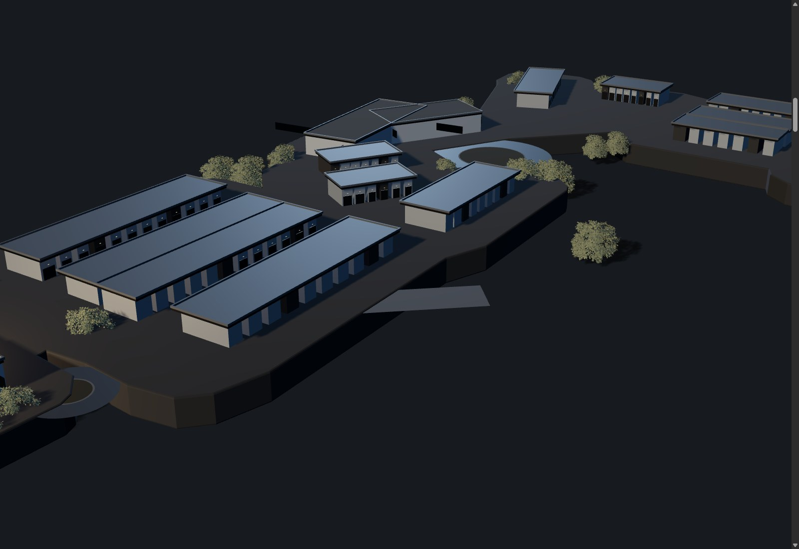
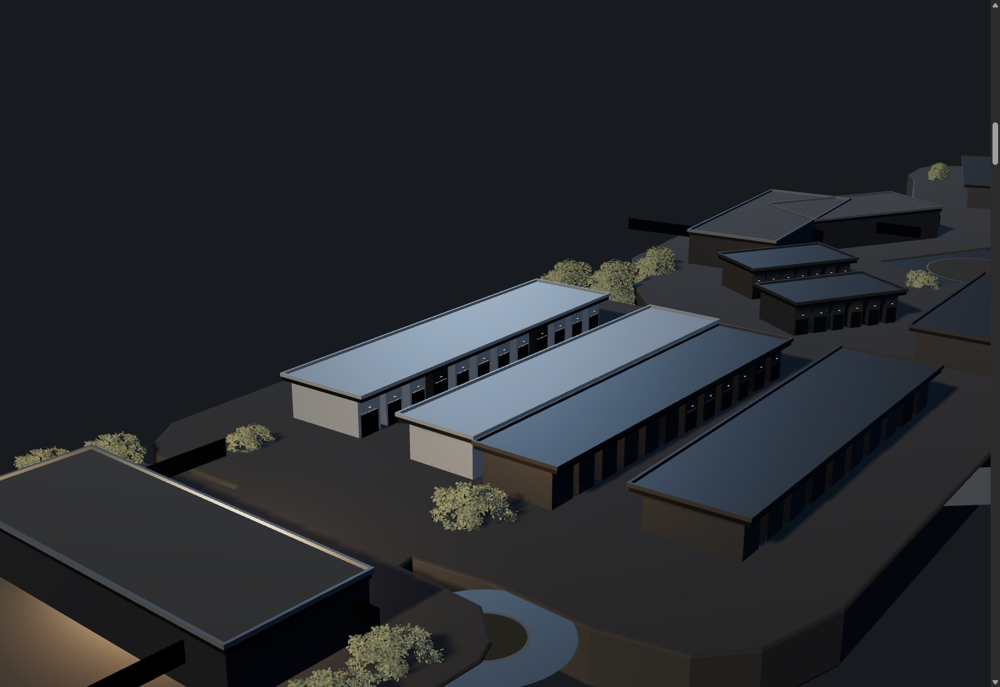
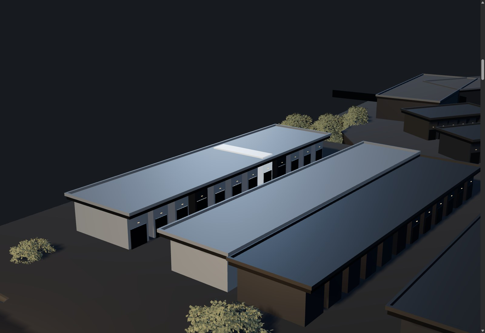

One machined device docked bottom-left. Fixed width and fixed left edge at every level; only its height changes, and only downward. The level track is part of the instrument rather than a separate breadcrumb. At rest it is 4% of the stage; fully open, 14%.


